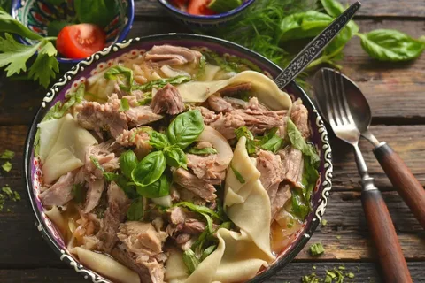
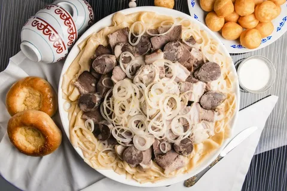

jhfw
Бешбармақjhfw
Бешбарма́к, бишбарма́к[1], бесбарма́к[1][2] (башк. бишбармаҡ, куллама; каз. бесбармақ[3], нарын; каракалп. turama; кирг. бешбармак, тууралган эт, нарын; тат. бишбармак, куллама; туркм. dograma; уйг. нерин, тутмач; узб. norin) — традиционное мясо-мучное блюдо тюркоязычных народов. Бешбармак готовится, как правило, по случаю семейных праздников или приёма дорогих гостей.
В целом, блюдо представляет собой крошеное отварное мясо[4] с лапшой, луковым соусом и некоторыми особенностями в технологии приготовления и подачи, что позволяет достичь вкуса, присущего именно этому блюду[5][⇨]. Традиция мелко крошить мясо имеет особое значение и древние корни. Это знак уважения хозяев к гостям, особенно к пожилым (им трудно разжёвывать крупные куски). Плохо накрошенное мясо в бешбармаке расценивается гостями как неуважение к ним[6].
В современном Казахстане под словом бешбармак/бесбармак ошибочно[7] понимают блюдо, именуемое по-казахски ет (каз. ет — мясо, «мясо по-казахски»), в киргизской кухне это же блюдо называется кульчётай, а в каракалпакской гуртук. Бешбармаком следует считать блюдо нарын[8], как это делается в Киргизии[9], так как нарын готовится из крошеного отварного мяса — обязательного ингредиента бешбармака.
jhfw
ЭтимологияСлово «бешбармак» (образованное из «беш» и «бармак») в переводе с киргизского языка означает «пять пальцев», «пятерня». По наиболее распространённой версии название блюда возникло от способа его употребления руками[10]. Есть и другая версия происхождения названия блюда. Например, П. С. Назаров считает, что так оно называется из-за того, что в это блюдо пресное тесто кладётся кусочками, предварительно намятыми пятью пальцами[11]. В трёхтомном труде 1832 года «Описание Киргиз-Казачьих, или, Киргиз-Кайсацкских орд и степей», посвящённом истории, культуре и быту казахов, А. И. Лёвшин описывает бешбармак как известнейшее кушанье, приготовляемое из мяса, мелко искрошенного и смешанного с кусочками сала, отмечая при этом, что название блюда хорошо выражает смысл действия — кочевники едят бешбармак пятью пальцами[12]. Согласно толковому словарю В. И. Даля, бешбармак (или бишбармак) «…у башкиров и киргизов, в переводе пятипалое (блюдо), варёное и крошеное мясо, обыкновенно баранина, с прибавкою к навару муки, круп; едят горстью. О дурно приготовленном кушанье говорят (оренб.): это какой-то бишбармак, крошево». Согласно этимологическому словарю русского языка М. Фасмера, бешбармак «кушанье из баранины с мучной приправой», …кушанье называется так потому, что его едят пятерней[10]. Согласно этимологическим словарям Н. М. Шанского, слово было заимствовано из татарского языка в XIX веке[13][14]. Наряду с этой точкой зрения существует и точка зрения, что оно заимствовано из киргизского языка[15]. По определению доктора филологических наук Супруна А. Е. «БЕШ-БАРМАК — понятие из многочисленной группы экзотических слов, относящихся к кулинарии. Означает оно распространённое у киргизов, казахов и некоторых других народов кушанье, „состоящее из мелко нарезанных кусков мяса и теста, политых бульоном“ (в Киргизско-русском словаре К. К. Юдахина, слово бармак переводится как „палец“). По звуковому облику — слово киргизское. Изредка встречающийся экзотизм бесбармак (с казахским бес) (киргиз.. беш „5“), по-видимому, является искусственным»[16][17].
